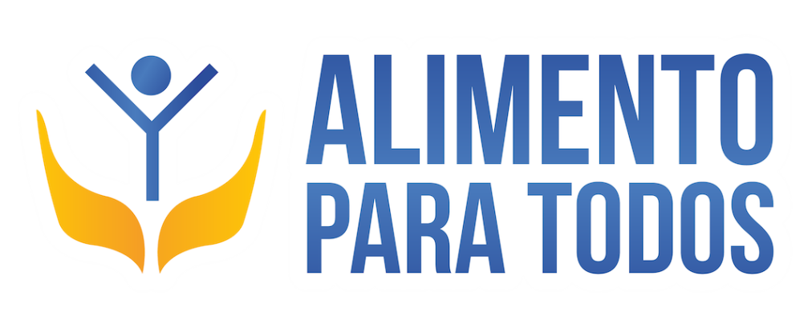
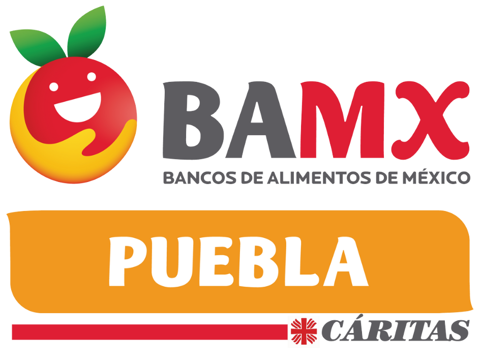
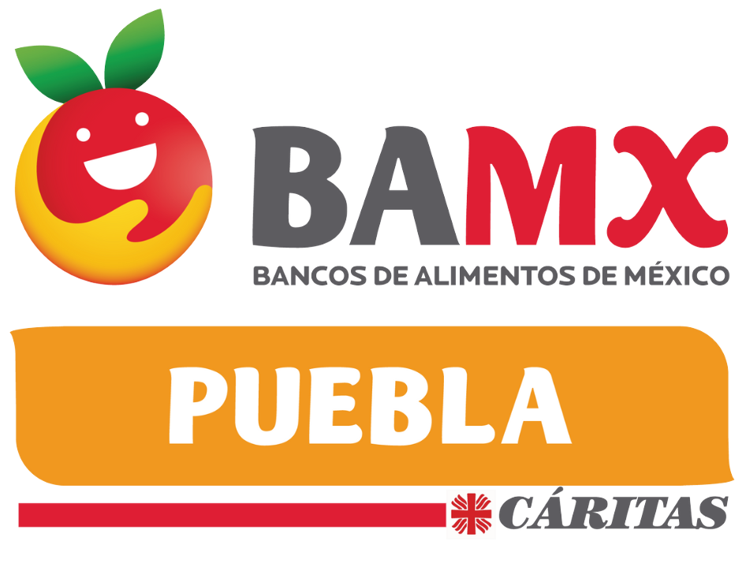
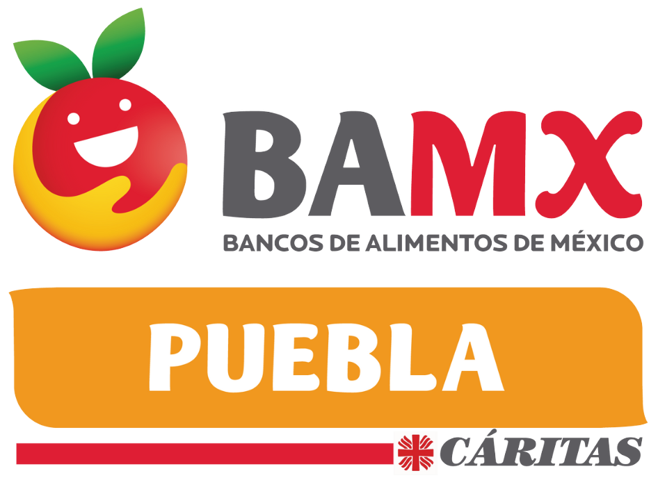
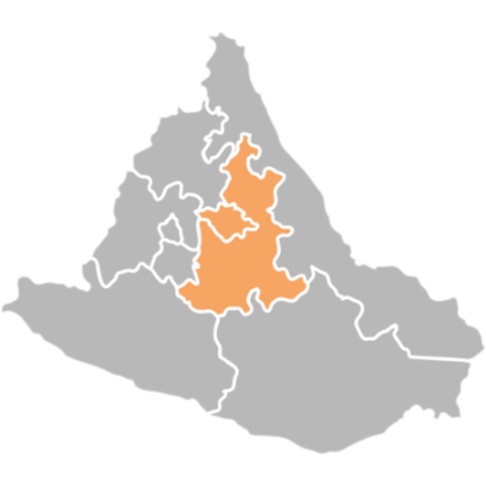
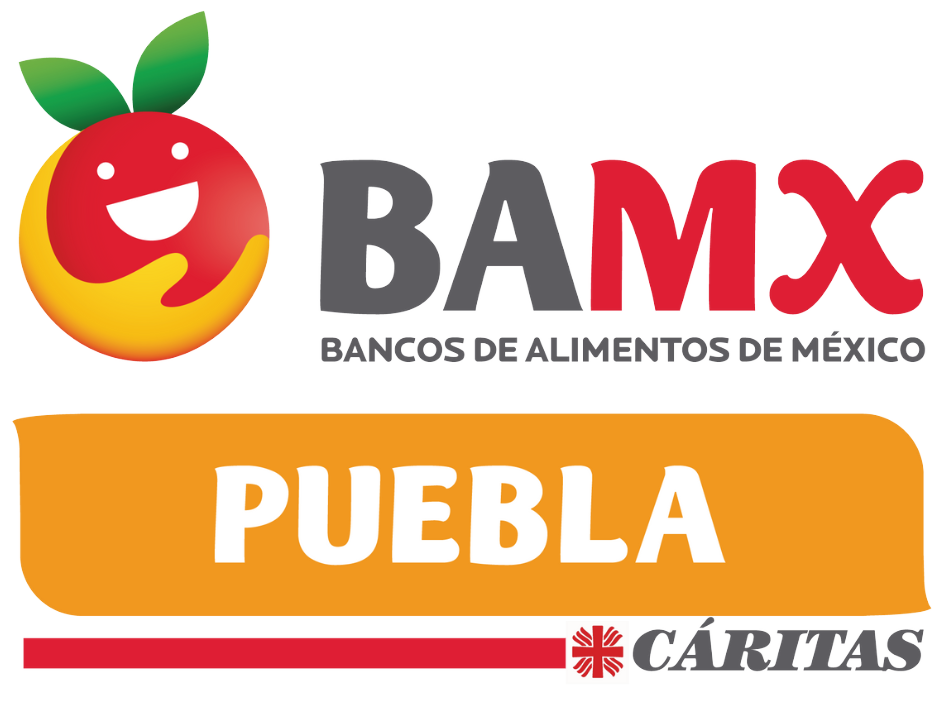

Asociados

 


En el estado de Puebla diariamente se desperdician aproximadamente 1,500 toneladas de alimento y al mismo tiempo un millón ochocientos mil poblanos no tienen suficiente para comer.

